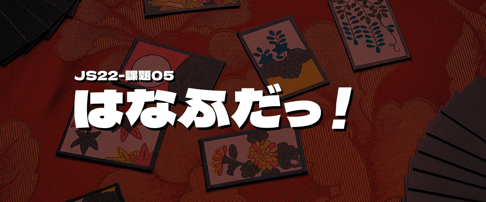

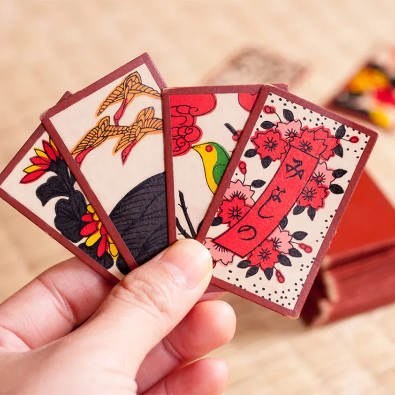
日本のかるたの一種で、「花かるた」とも呼ばれます。その歴史は古く、安土・桃山時代の「天正かるた」、江戸時代前期の「ウンスンカルタ」から、江戸時代中期に現在使用している花札ができたと言われています。
花札は四十八枚ある札を使って遊びます。札には、一月から十二月までの折々の花や草木が各月４枚ずつ描かれています。
各絵柄ごとに点数がついているほか、組み合わせによってできあがる「役」というものがあり、役にも点数がついています。
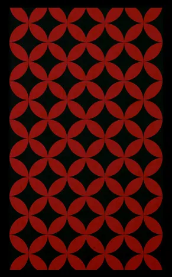
気になる札を選びましょう
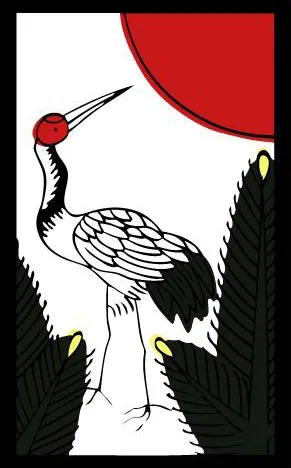
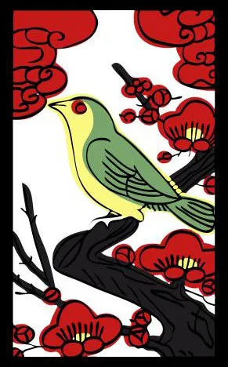
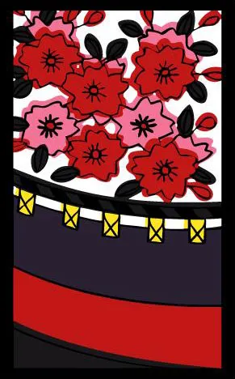
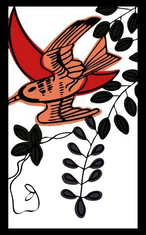
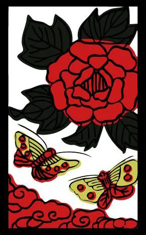
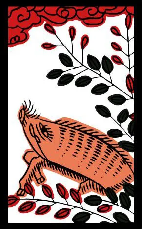
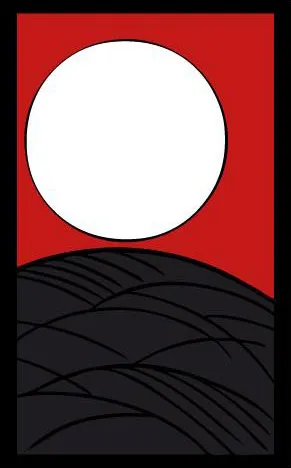
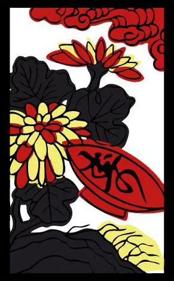
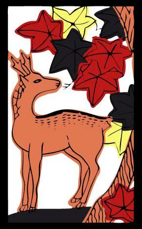
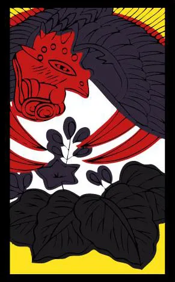